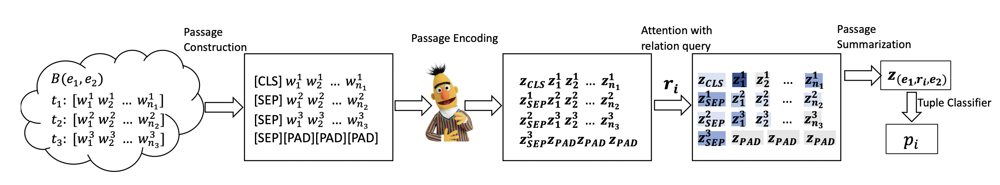
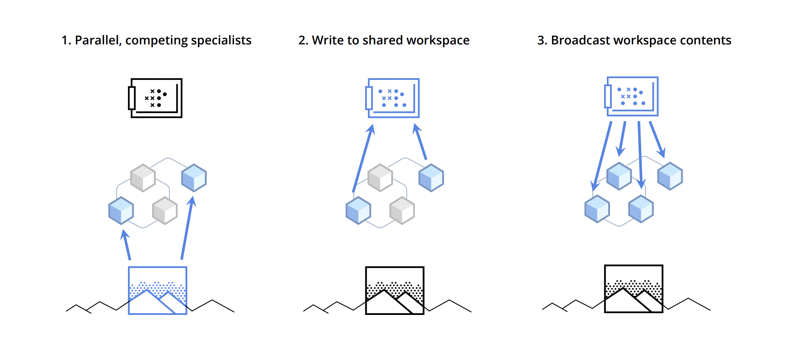
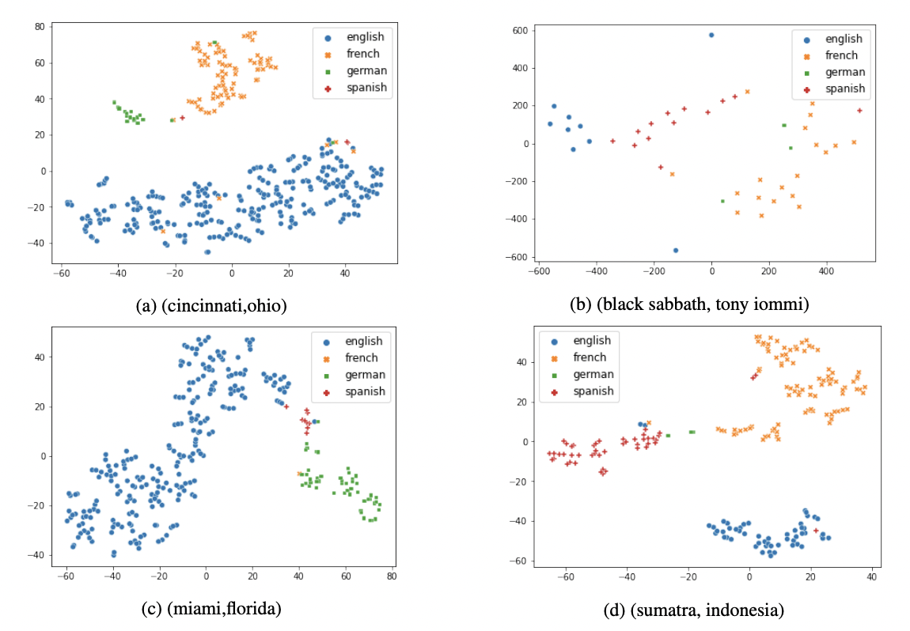
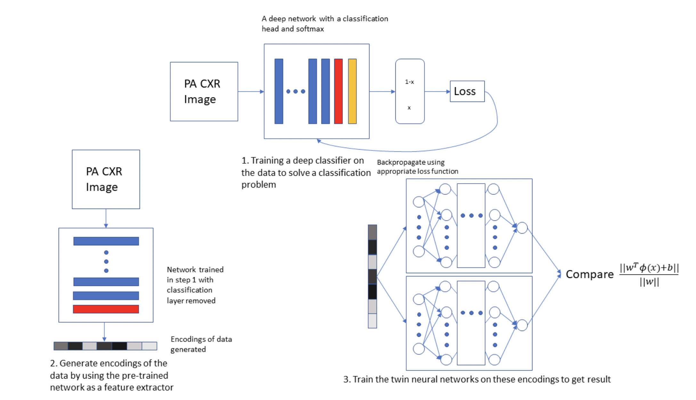

|

|
PARE: A Simple and Strong Baseline for Monolingual and Multilingual
Distantly Supervised Relation Extraction
Vipul Rathore*, Kartikeya Badola*, Parag Singla, Mausam
Under review, 2021
A simple BERT based model for multi-instance multi-label setting of distantly supervsied relation extraction (DS-RE). Outperforms exsisting state-of-the-art models on monolingual and multilingual DS-RE datasets.
|
|

|
Coordination Among Neural Modules Through a Shared Global Workspace
Anirudh Goyal, Aniket Didolkar, Alex Lamb, Kartikeya Badola, Nan Rosemary Ke, Nasim Rahaman, Jonathan Binas, Charles Blundell, Michael Mozer, Yoshua Bengio
Under review, 2021
Use of a global channel with an inherent bottleneck to model communication between specialist modules in a modular neural network (as opposed to all-pair attention update). Achieves better generalization across tasks from various domains.
|
|

|
DiS-ReX: A Multilingual Dataset for Distantly Supervised Relation Extraction
Abhyuday Bhartiya*, Kartikeya Badola*, Mausam
Under review, 2021
A high quality dataset for multilingual distantly supervised relation extraction (DS-RE) along with the first baseline results for the task.
|
|

|
Twin Augmented Architectures for Robust Classification of COVID-19 Chest X-Ray Images
Kartikeya Badola, Sameer Ambekar, Himanshu Pant, Sumit Soman, Anuradha Sural, Rajiv Narang, Suresh Chandra, Jayadeva
arXiv, 2021
A novel fine-tuning approach for deep neural networks dealing with imbalanced datasets. Obtains performance improvement over base model on a COVID-19 CXR classification dataset.
|
All GIFs from Bon Iver's I,I (a really beautiful album). Template by John Barron
|
{kind=link}